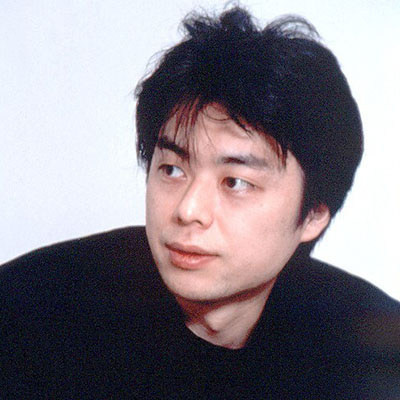

官方展会活动
关于官方节目
TGS2020 ONLINE官方节目，除了参展商发布最新信息等的“官方参展商节目”之外，还将播出主办方“主旨演讲”和“e-Sports X”、独立游戏开发者演示活动“Sense of Wonder Night”、“日本游戏大奖”揭晓和颁奖典礼等。
均无需事前注册或登录即可免费收看。
官方节目表请参阅“时间表”。
官方节目仅可通过YouTube、Twitter、Twitch、niconico、TikTok Live、Douyu（中国）、Bilibili（中国）、Douyin(中国)等TGS官方频道/账号及Amazon特设会场等进行收看。TGS2020 ONLINE设置有链接，请选择您喜欢的平台进行收看（※）。
此外，大多数节目直播后将存档视频。支持无限回看。但是，个别节目设有存档期限，敬请留意。
※个别节目在部分平台无法收看。此外，部分节目面向海外播出英文版和中文版。发生收看方面的问题时，请确认各平台的故障排查方法等。
官方赞助人

hajime社长
为了向广大观众宣传TGS2020 ONLINE的魅力所在，本活动特别邀请在年轻一代中具有爆棚人气的视频创作者——hajime社长担任官方赞助人。hajime社长是一位知名的游戏爱好者，他在自创YouTube频道“hajime社长2（hajime）”上发布了大量游戏实况视频，这一频道与“hajime社长（hajime）”的频道订阅总人数高达1,147万人。
hajime社长预计做客TGS2020 ONLINE的“开场节目”和“尾声节目”。敬请期待！
[官方支持者Hajime Shacho先生的评论]
开幕式视频可在TGS2020 ONLINE官方网站（http://tgs.cesa.or.jp/）和TGS官方频道上找到。 请看一下。
官方节目MC
TGS2020 ONLINE官方节目将由3名全能MC点燃全场。他们将在4天时间内轮流出演节目，为大家带来官方参展商节目和主办方节目等。敬请期待。
-
 渡边浩二
（WATANABE KOJI)
出生于福冈县福冈市，作家
中野百老汇餐饮店K-CAFÉ店主、游戏和食品软件制作公司“GTV”董事长、赛博朋克（cyber punk）小说家。还担任早稻田大学研究生院兼职讲师。 -

平岩康佑
（HIRAIWA KOUSUKE)
出生于东京都品川区，自由播音员
株式会社ODYSSEY董事长
至2018年6月15日在朝日放送电视台（ABC电视台）担任播音员，从该时期起开始从事“电竞主持人”工作。 -

田口尚平
（TAGUCHI SHOHEI）
"出生于神奈川县横滨市
原东京电视台播音员
被称为“播音界第一宅男”，在任职电视台播音员期间，就开始从事“电竞主持人”工作。"
开场节目
“凯！ 东京电玩展2020 线上”
-
播放时间
2020年9月24日（周四）20时-20时50分（东京时间）
三位官方计划的MC和东京电玩展2020官方支持者Hajime Shacho将介绍这四天的亮点。
嘉宾：渡边浩弐、平岩康佑、田口尚平、hajime社长
主旨演讲
《游戏，未来红利的第一受益行业》
-
播放时间
2020年9月25日（周五）19时-19时50分（东京时间）
新冠疫情之下，我们的社会发生了巨大的震荡，而游戏的潜在空间正在不断拓宽，新一代游戏机和支持该机型的游戏作品整装待售，电竞选手队伍也在不断壮大。同时，受到新冠疫情的影响，游戏制作流程也有所变化。今天，四家日本国内发行商的代表就将为我们讲述游戏会对不远的将来产生哪些影响。
＜トークテーマ＞
① 次世代機の未来
次世代機（PS5やXBOX）マルチプラットフォーム対応タイトルの開発・制作の課題や未来、期待などについて
② ユーザーコミュニケーションについて
SNSを活用したユーザーコミュニケーションの取り組みや今後について
③ ウィズコロナ時代のゲームづくりと未来
New normal時代におけるゲーム業界の発展について
-

-
内山大辅
万代南梦宫工作室
董事长社长
制作人时期曾负责过《龙珠系列》、《.hack》等多部作品，主管万代南梦宫娱乐的全球主机游戏部门，如尝试提供云游戏服务、进军电竞等等。目前正在挑战开发全球性自制作品。
-

-
竹内润
卡普空
常务执行董事 CS第一开发总负责人 兼 第一开发部部长
"1991年，以一名设计师的身份进入卡普空工作。在《生化危机》及《生化危机2》中担任总设计师和武器设计监制。
担任《鬼武者》总监之后，又在《鬼武者3》中担任制作人一职。代表作有《生化危机5》、《失落的星球：极限状态》、《失落的星球2》等。现以CS第一开发总负责人的身份负责全球性作品的开发业务。"
-
-
谷渊弘
科乐美数码娱乐
《实况力量棒球》、《职业棒球之魂》系列
执行董事
1994年4月，以一名程序员的身份进入科乐美工作。所属为《实况力量棒球》制作团队。此后，历任总监、制作人、总制作人等职务，长年参与《实况力量棒球》、《职业棒球之魂》等棒球游戏的制作。
目前以执行董事的身份负责棒球游戏的整体质量管控并推进电竞业务（eBASEBALL 职业联赛）。
-
-
滨口 直树
史克威尔·艾尼克斯
第一开发事业本部经理
FF7Remake 联合总监
2003年进入史克威尔•艾尼克斯后，参与了获赞无数的FINAL FANTASY XII（《最终幻想12》）的开发工作。此后，又参与开发了FINAL FANTASY XIII（《最终幻想13》）系列、MOBIUS FINAL FANTASY（《莫比乌斯：最终幻想》）等多款受玩家追捧的FINAL FANTASY游戏。
近来，出任FINAL FANTASY VII REMAKE（《最终幻想7：重制版》）的联合总监，与同任联合总监的鸟山求、总监野村哲也通力合作，运用自身丰富的行业经验负责游戏的设计与程序工作。
-

-
协调员
林克彦
KADOKAWA Game Linkage
曾任《电玩通周刊》主编，2020年4月起出任电玩通集团代表。
目标是在日新月异的游戏行业打造出引领时代潮流的服务内容。
专业会议
《2021年游戏行业最新技术动向》
-
播放时间
2020年9月25日（周五）11时～11时50分（东京时间）
游戏行业巨子带您展望2021年推动游戏行业向前发展的各类最新技术的潮流动向，如新型硬件、勾勒最新游戏框架的游戏引擎、VR、AR等全新设备以及云服务等。
-

-
新清士
游戏记者
株式会社Thirdverse董事长，曾开发VR剑术游戏《泰坦之剑》。数字好莱坞大学研究生院副教授。Tokyo XR Startups董事。著有《VR商务强势来袭 “虚拟世界”将催生巨大市场》（NHK出版）。
-

-
簗濑洋平
Unity Technologies Japan
产品传道者/教育主管
自学生时代起，便在Nippon Computer Systems美塞亚事业部、Career Soft、KOEINET等积累工作经验，并在索尼电脑娱乐、ATLAS、游戏共和国、CyberConnect2等公司以游戏设计师和脚本的身份参与了游戏制作。主要作品包括《梦幻模拟战》、《梦幻骑士》、《旺达与巨像》、《Folks Soul 失落的传承》等。2012年起改任史克威尔·艾尼克斯研究员，目前在Unity Technologies Japan主管学术和教育工作，同时开展研究工作。
2017年凭借Unlimited Corridor一举夺得文化厅媒体艺术节娱乐领域优秀奖
-
-
西川善司
技术记者
西川将重点放在游戏开发技术，半导体技术，视频技术和汽车技术等主题上。工科大学特聘教授，东京工业大学特别讲师，monoAI技术顾问
-
主持人
-
东将大
日经BP
日经xTECH/日经电子 记者
《2020版 如何畅享电竞激情》
-
播放时间
2020年9月26日（周六）10时-10时50分（东京时间）
如今，电竞的受众范围越来越广。在节目中，职业电竞战队、赞助商、设备商和各个领域的大牛汇聚一堂，为您揭晓电竞最前线究竟发生了哪些变化。职业选手在电竞中激烈角逐、争相竞技，企业对抗赛和公司社团活动等因业余电竞而获得了激情四射的平台，观众们也在电竞中踊跃观战、为活动加油助威。因受到新冠疫情的负面影响，大量赛事纷纷转为线上举行，此时此刻的我们，又该如何畅享电竞带来的激情？
-
-
西谷丽
Rush Gaming CEO
Wekids CEO
Wekids于2014年成立，主要负责游戏领域的营销代理和社区管理。 还担任“ Rush Gaming”的首席执行官，Rush Gaming是活跃于FPS游戏（如《使命召唤》）中的电子竞技团队。
-
-
福吉 敬
札幌啤酒
传播发展部 媒介统括组 资深媒介策划经理
辗转日本国内酒厂和外资厂商后，于2014年进入札幌啤酒工作。2015年9月起，担任宣传室网站负责人至今。
-
-
David Bennett
雷诺日本
总经理
加拿大人，毕业于多伦多大学研究生院。在早稻田大学完成日语培训项目后，进入学习院女子大学研究生院攻读日本古典文学。2018年5月进入Lenovo Group工作，以主管日本市场的副总裁的身份担任雷诺日本和NEC Personal Computers的总经理。近作有《外企总经理遇到过的那些奇奇怪怪的日语》。
-
主持人
-
平野亚矢
日经BP
日经xTREND副主编
"《在Nintendo Switch上开发游戏，
“做一名游戏创作者！”》"
-
播放时间
2020年9月27日（周日）10时-10时50分（东京时间）
资深游戏创作者“Hakase”将在创作游戏的同时为您讲述游戏创作者的具体工作内容！
创作游戏所使用的是《PetitComputer4 SmileBASIC》，有了它，我们可以在Nintendo Switch(TM)上创作游戏并尽情畅玩。《PetitComputer4》不仅可以编程，还能够自创图像和声音，这一次，我们就用它来创作游戏。节目中还设有提问环节，大家可以自由提问，如怎样成为一名游戏创作者等等，Hakase会有问必答。本节目面向少儿观众，为那些想做游戏创作者但不熟悉工作内容、不知道如何去努力的孩子们答疑解惑。
-

-
小林贵树
SmileBoom
董事长
自1985年起，担任过《木偶奇遇记（Woody POCO）》(PC)、《我的料理》(PS)、《激战大富翁》(PS2)等多款独创性游戏的总监，至今仍活跃在游戏制作的最前线。长年来，一直致力于开办少儿编程工作坊，对包括高校在内的各类学校进行指导，并与CESA等行业协会开展合作，将为游戏行业培养优秀人才当作自己的毕生事业。北海道科学大学未来设计学院媒体设计系客座教授。北海道情报大学信息传媒学院客座教授。
https://smileboom.com/product/
twitter @notohoho
-
-
UI
视频创作者
游戏死忠粉，发布过各类游戏的视频！偶尔走日常系路线。抽卡手气最非，无人能敌。
e-Sports X
-
播出日期
2020年9月24日（周四）-27日（周日）（日本时间）
往年无数观众现场观战的东京电玩展电竞比赛，今年也将在线上举行。我们将奉上TGS2020 ONLINE各参展商参赛的“e-Sports X”，敬请享受一系列激动人心的比赛。比赛为免费收看，无需登录。
Sense of Wonder Night 2020
-
播出日期
2020年9月25日（周五）17：00-19：00（日本时间）
“Sense of Wonder Night 2020（SOWN2020）”是发掘“无论是谁，在看到或听到概念的瞬间，均会感觉自己的世界发生了某种变化”的游戏创意，向游戏开发者提供在东京电玩展会场演示并介绍作品的机会的策划。今年是第13届，将在线上举行。
日本游戏大奖2020
-
播出时间
日本游戏大奖2020 年度作品组 Day 1
2020年9月26日（周六）19：00～19：50（日本时间）
日本游戏大奖2020 年度作品组 Day 2
2020年9月27日（周日）19：00～19：50（日本时间）
日本游戏大奖2020 业余组
2020年9月26日（周六）13：00～14：30（日本时间）
日本游戏大奖2020 U18组
2020年9月27日（日）13：00-15：00（日本时间）
日本游戏大奖，是以“作品”和“人物”为评判对象的“更具开放性意义的表彰制度”，往年一直在东京电玩展会场举行揭晓和颁奖典礼。揭晓和颁奖典礼分为以已发布作品为对象的“年度作品组”：不论法人、团体、个人，以业余人员制作的未上市原创作品为对象的“业余组”；以18岁以下人员制作的作品为对象的“U18组”3个组别进行。
尾声节目
“ 东京电玩展2020 线上粉丝见面会-朝2021-”
-
播放时间
2020年9月27日（周日）24时-24时50分（东京时间）
邀请了东京电玩展的粉丝们，不仅是官方支持者Hajime Shacho，而且是这次与东京电玩展合作的每个人，以及支持在线运营的幕后，我们从各种角度回顾了为期4天的东京电玩展。 在谈到2021年的前景时。
嘉宾：渡边浩弐、平岩康佑、田口尚平、hajime社长